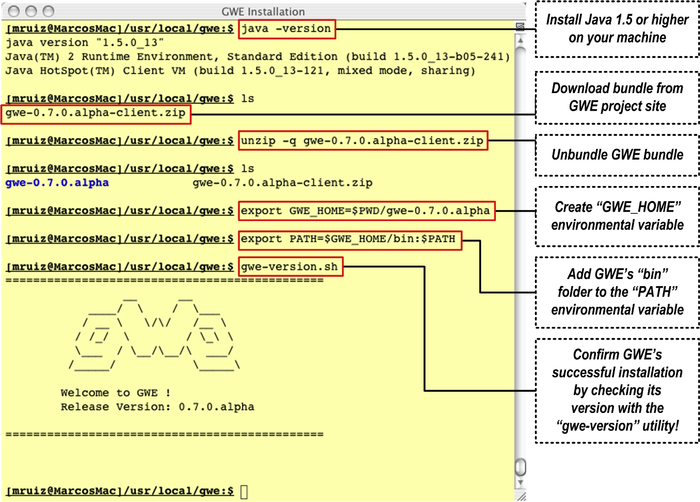

Download one of the GWE distribution bundles:
|
Bundle Link
|
| GWE Alpha Release 0.7.3.alpha (zip) |
gwe-0.7.3.alpha-client.zip
|
| GWE Alpha Release 0.7.3.alpha (tar.gz) |
gwe-0.7.3.alpha-client.tar.gz
|
| GWE Alpha Release 0.7.3.alpha (tar.bz2) |
gwe-0.7.3.alpha-client.tar.bz2
|
NOTE: The fact that these bundles include a '-client' prefix doesn't mean that they don't carry within them the necessary artifacts to deploy and entire GWE system. In summary, these bundles are everything you need to be able to deploy the full blown enterprise distributed system in your grid environment
Previous Releases
All previous releases of GWE can be found here
.
Client Workstations
| JDK
|
1.5 or above |
| Memory
|
No minimum requirement |
| Disk
|
No minimum requirement. |
| Operating System
|
No minimum requirement. On Windows, Windows NT and above, Cygwin is required. |
| Network
|
TCP/IP network connectivity to target cluster head nodes. |
Cluster Head Nodes
| JDK
|
1.5 or above |
| Memory
|
512MB or more |
| Disk
|
Enough to hold localized and result files for a number of jobs equal to the daemon's queue size |
| Operating System
|
No minimum requirement. Preferable Unix based. |
| Network
|
TCP/IP network connectivity and SSH port opened. |
GWE is a Java 1.5 based system, so you must have
Java 1.5
or higher installed in order to proceed.
Unix-based Operating Systems (Linux, Solaris and Mac OS X)
- Extract the distribution archive, i.e. gwe-0.7.3.alpha-client.zip
to the directory you wish to install GWE 0.7.3.alpha. These instructions assume you chose "/usr/local/gwe"
. The directory gwe-0.7.3.alpha
will be created from the archive.
- In a command terminal, add the GWE_HOME
environment variable, e.g. "export GWE_HOME=/usr/local/gwe/gwe-0.7.3.alpha"
.
- Add GWE_HOME/bin
environment variable to your path, e.g. "export PATH=$GWE_HOME/bin:$PATH"
.
- Make sure that JAVA_HOME
is set to the location of your JDK, e.g. "export JAVA_HOME=/usr/java/jdk1.5.0_02"
and that "$JAVA_HOME/bin"
is in your PATH
environment variable.
Windows 2000/XP (Under Construction - Unresolved Cygwin related problems)
- Install Cygwin
in your system if it is not already installed.
- Unzip the distribution archive, i.e. gwe-0.7.3.alpha-client.zip
to the directory you wish to install GWE 0.7.3.alpha. These instructions assume you chose "C:\Program Files\GWE"
. The directory gwe-0.7.3.alpha
will be created from the archive.
- Add the GWE_HOME
environment variable by opening up the system properties (WinKey + Pause), selecting the "Advanced" tab, and the "Environment Variables" button, then adding the GWE_HOME
variable in the user variables with the value "C:\Program Files\GWE\gwe-0.7.3.alpha"
.
- In the same dialog, update/create the Path
environment variable in the user variables with the value "%GWE_HOME%;%Path%"
to make GWE available from the command line.
- In the same dialog, make sure that JAVA_HOME
exists in your user variables or in the system variables and it is set to the location of your JDK, e.g. "C:\Program Files\Java\jdk1.5.0_02"
and that "%JAVA_HOME%\bin"
is in your Path
environment variable.
- Open a new command prompt (Winkey + R then type "cmd"
) and run "mvn --version"
to verify that it is correctly installed.
Installation Sample Snapshot on Mac OS X
